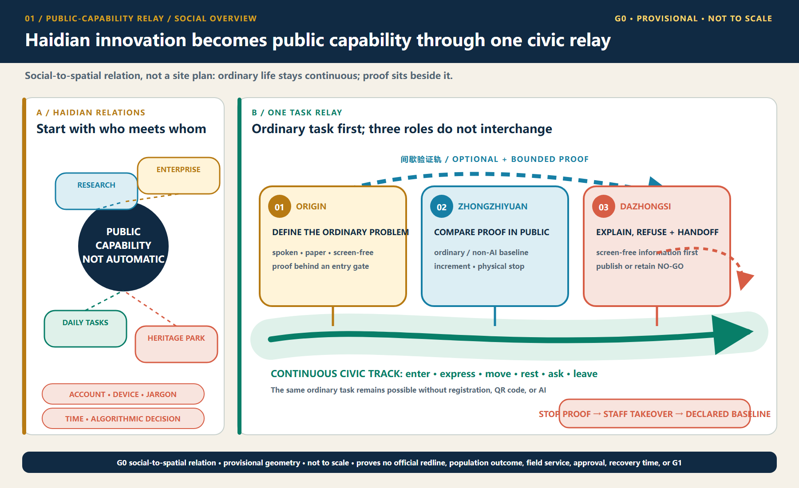
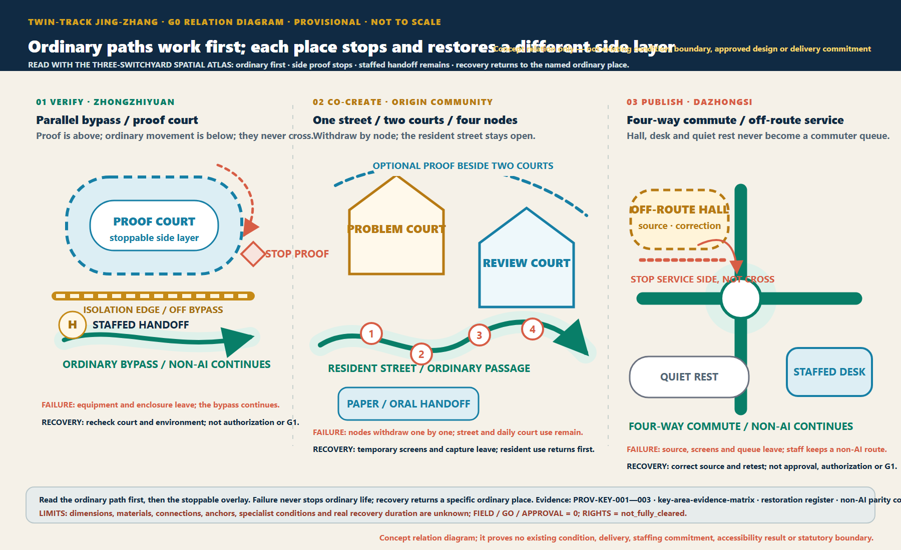
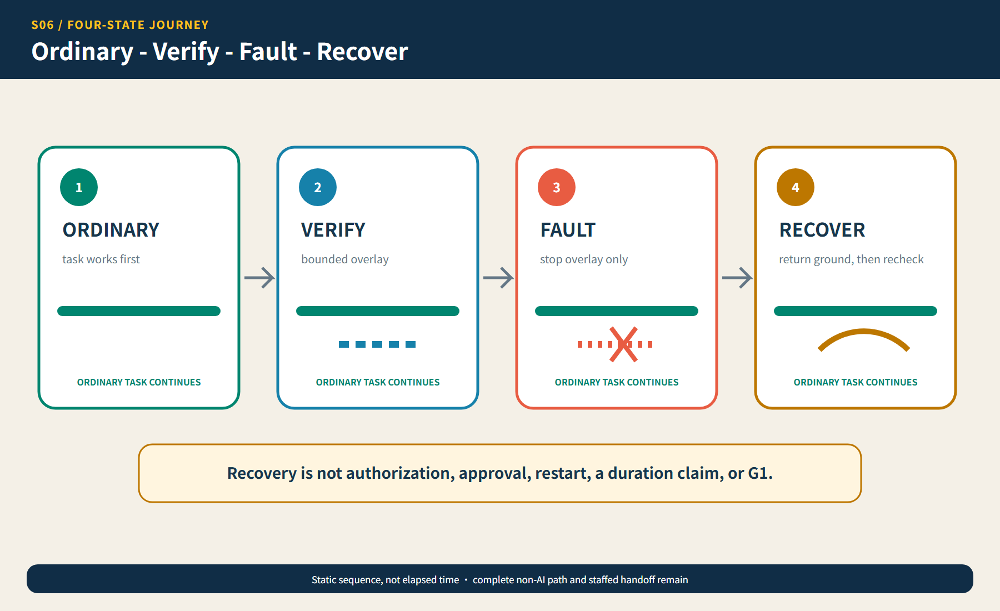
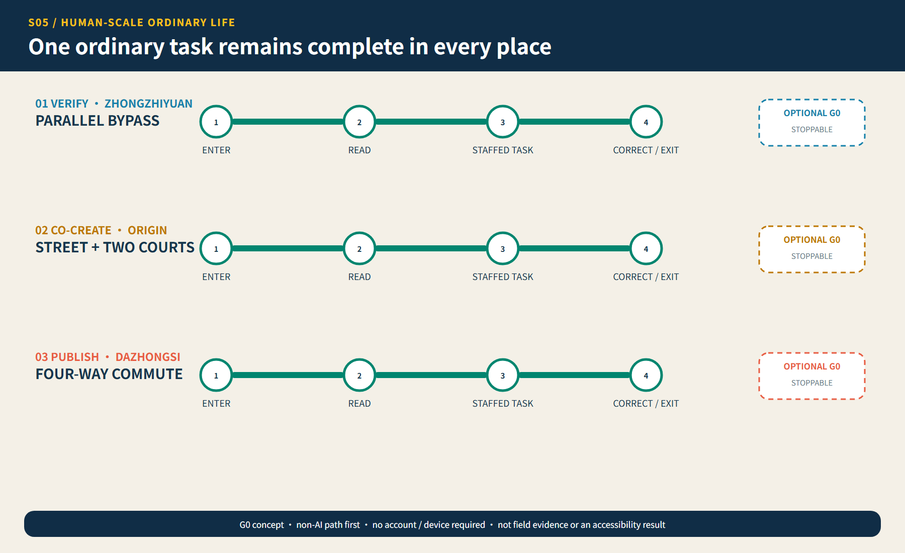
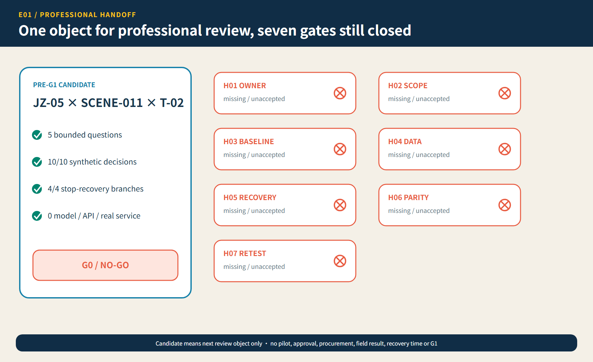

01
30 seconds: the spatial decision

02
Three places cannot exchange answers

03
3 minutes: ordinary - verify - fault - recover

04
One complete non-AI task in every state

05
One pre-G1 review candidate, still NO-GO

06
15 minutes: trace claim, evidence, rights and veto
Geometry and metrics remain frozen. The sole candidate now has seven H01-H07 closure conditions and eight D01-D08 material records, while real attachments, acceptances, approvals, field results and independent retests remain zero; the 10/10 synthetic replay is not service accuracy.
Provisional site model11.41 km²
Green ratio12.62%
Public-space ratio1.28%
Task coverage
- Overview map
- Three-level scope
- Key areas
- Land-use zoning
- Mobility
- Blue-green public space
- Architecture
- Renewal projects
- AI scenarios
- Core metrics
- Task coverage
- Self-check status
- Assumptions